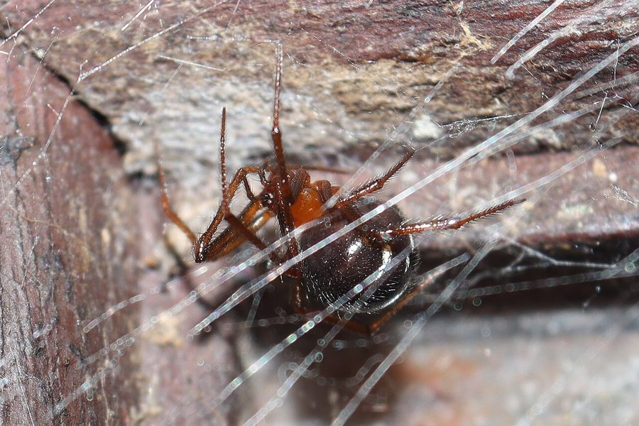

लाल घरेलू मकड़ीRed House Spider
Nesticodes rufipes · Theridiidae · SPD-0049

- Scientific name वैज्ञानिक नाम
- Nesticodes rufipes (Lucas, 1846)
- Family कुल
- Theridiidae
- Hindi हिंदी
- लाल घरेलू मकड़ी
- Local names स्थानीय नाम
- red house spider, nesticodes rufipes, red-legged cobweb spider
- Status here यहाँ की स्थिति
- native
- Movement आवागमन
- Resident, here all year
- Known from कहाँ दर्ज
- Others have published records from the wider Awadh–Purvanchal plain, none yet from Basti–Ayodhya अवध–पूर्वांचल से दूसरों के प्रकाशित अभिलेख, बस्ती–अयोध्या से अभी नहीं
- IUCN IUCN
- not evaluated
- Review समीक्षा
- not yet reviewed
When to look कब देखें
Present all year. साल भर मौजूद।
Tell it apart from इनसे अलग पहचानें
लाल घरेलू मकड़ी / Red House Spider
Nesticodes rufipes (Lucas, 1846) — Theridiidae
लाल घरेलू मकड़ी — घरों, पशुशालाओं और गोदामों के अंधेरे कोनों में पाई जाने वाली एक परिचित घरेलू मकड़ी, जिसका पेट गोल मटके जैसा, सिर लाल-भूरा और टांगें लंबी नारंगी-लाल रंग की होती हैं।
Quick Identification त्वरित पहचान
| Feature | Description |
|---|---|
| Abdomen | Large, smooth, swollen globular or spherical abdomen, usually pale yellowish-grey to brownish |
| Color contrast | Translucent reddish-brown to orange cephalothorax with contrasting bright reddish-orange legs |
| Tarsal comb | Hind legs (tarsus IV) equipped with a distinct comb of curved, serrated bristles |
| Web structure | Irregular, tangled three-dimensional cobweb with vertical gum-footed silk anchor lines |
| Egg sac | Suspends a clean, spherical, pale pinkish-white to creamy-yellow silk egg cocoon in the web |
Medium-sized synanthropic cobweb spider easily recognized by its bulbous, rounded globular abdomen and contrasting bright orange-red or reddish-brown legs and carapace. As a typical comb-footed spider (Theridiidae), it possesses a comb of serrated setae on the hind tarsi used to fling sticky silk onto struggling insects. It spins an untidy, tangled three-dimensional cobweb in dark room angles, under furniture, or inside cattle sheds.
हिंदी: घरों और गोठों में रहने वाली गोल-मटोल पेट वाली मकड़ी। सिर और टांगें चमकीली लाल-नारंगी होती हैं। यह कमरों के अंधेरे कोनों में उलझा हुआ चिपचिपा जाला बनाती है और घरेलू कीड़ों को पकड़ती है।
Morphology शारीरिक संरचना
The female has a distinctly spherical, bulbous abdomen that is smooth and shiny, varying from creamy-buff to pale brownish-grey, occasionally with faint darker mottling. The cephalothorax is oval, moderately convex, and translucent reddish-brown or bright amber-orange. The eyes are relatively small, ringed with black, arranged in two transverse rows. Legs are long, slender, and bright orange-red, with the fourth pair bearing the characteristic comb of curved serrated bristles on the underside of the tarsus. The male is significantly smaller with a less swollen, oval abdomen, longer and more slender legs, and heavily sclerotized, bulbous pedipalpal copulatory organs.
हिंदी: पेट पूरी तरह गोल गेंद जैसा चिकना होता है। टांगें चमकदार नारंगी-लाल होती हैं। पिछली टांगों पर कंघी जैसे बारीक बाल होते हैं।
Behaviour & Ecology व्यवहार एवं पारिस्थितिकी
A strictly synanthropic, shade-loving cobweb weaver that thrives within human structures. It spins an intricate, non-uniform, three-dimensional tangled maze of dry structural silk from which vertical tension threads extend downwards to the floor or wall base. These lower lines are primed with droplets of extremely sticky viscid silk (gum-footed lines). When a crawling insect encounters an anchor line, the thread snaps free, hoisting the entangled prey into the air. The spider rushes down, flings swathes of sticky silk using its tarsal comb, and bites the prey.
हिंदी: यह घरों के साएदार और शांत कोनों में रहती है। यह नीचे की ओर चिपचिपे धागे छोड़ती है। जैसे ही कोई चींटी या कीड़ा धागे को छूता है, धागा टूटकर उसे ऊपर खींच लेता है और मकड़ी तुरंत आकर उसे बांध लेती है।
Life Cycle / Phenology जीवन चक्र एवं फेनोलॉजी
Because it lives in human dwellings and livestock sheds with stable microclimates, reproduction occurs continuously year-round (Sebastian & Peter 2009). The male cautiously enters the female's tangled web, plucking silk strands to signal non-prey status before approaching to copulate. After fertilization, the female constructs one or more smooth, perfectly spherical egg sacs made of dense papery creamy-white or light pinkish silk. Each egg sac contains 40 to 90 eggs. The egg sac is suspended securely in the center of the tangle web and guarded by the female.
हिंदी: घरेलू वातावरण में यह पूरे साल अंडे देती है। मादा रेशम का एक गोल और चिकना थैला बनाती है जिसमें 40 से 90 अंडे होते हैं। वह इस थैली को जाले के बीच में लटकाकर उसकी रखवाली करती है।
Host Plants or Prey आहार एवं शिकार
Carnivorous predator specializing in crawling and low-flying domestic insects. Prey items include household ants (e.g., Monomorium and Camponotus), nuisance mosquitoes, bedbugs, houseflies, silverfish, dermestid beetle larvae, small roaches, and termites. Its gum-footed snare lines are exceptionally effective at stopping heavily armored insects like ants that other spiders struggle to subdue.
हिंदी: इसका मुख्य भोजन घरों और पशुशालाओं के हानिकारक कीड़े हैं, जिनमें चींटियां, मच्छर, खटमल, मक्खियां, दीमक और छोटे तिलचट्टे शामिल हैं। यह बड़ी चींटियों को भी आसानी से फंसाकर खा जाती है।
Predators / Natural Enemies प्राकृतिक शत्रु एवं शिकारी
In domestic environments, major predators include the common house gecko (Hemidactylus frenatus), spitting spiders (Scytodes), and cellar spiders (Pholcus phalangioides and Crossopriza lyoni), which actively invade its tangled webs to kill and consume it. Mud-dauber wasps entering open verandas also collect them for provisioning larval cells. Humans frequently sweep away its webs during domestic cleaning.
हिंदी: घर की छिपकली और लंबी टांगों वाली सेलर मकड़ी इसके प्रमुख दुश्मन हैं जो इसके जाले में घुसकर इसे खा जाते हैं। घरों में झाड़ू लगाने से भी इसके जाले और अंडे नष्ट हो जाते हैं।
Agricultural / Human Relevance कृषि एवं मानव उपयोगिता
Provides valuable biological sanitation and domestic pest control in rural homesteads and agricultural cattle sheds. In dairy barns and village homes, it consumes large numbers of biting flies, mosquitoes, and house ants, reducing nuisance pest burdens without any need for toxic domestic chemical insecticides. Although related to widow spiders, its venom is weak and causes only minor, localized, transient irritation in humans.
हिंदी: यह गांवों के घरों और पशुशालाओं में मच्छरों, मक्खियों और चींटियों को मारकर मुफ्त में सफाईकर्मी का काम करती है। इसका जहर बहुत कमजोर होता है और इंसानों के लिए कोई गंभीर खतरा पैदा नहीं करता।
Expected Locally क्षेत्रीय संभावना
Not a field record. Written from published accounts for eastern Uttar Pradesh. No confirmed local sighting yet — if you have seen it, that is what the atlas needs.
अभी तक स्थानीय पुष्टि नहीं। यह विवरण प्रकाशित स्रोतों से है, किसी अवलोकन से नहीं।
GBIF holds published records across the northern Gangetic plains and throughout urban and rural habitations of eastern Uttar Pradesh. It is expected in domestic rooms, storehouses, cattle barns, and veranda corners across settlements along the Ghaghara and Kuwana river basins. A confirmed local record requires a clear photograph displaying the bulbous abdomen, orange-red legs, and tangled cobweb with date and locality details.
हिंदी: यह पूर्वी उत्तर प्रदेश के ग्रामीण घरों, पशुशालाओं और पुराने कमरों के अंधेरे कोनों में संभावित है। पुष्टि के लिए गोल पेट, लाल टांगों और उलझे जाले को दर्शाने वाली स्पष्ट तस्वीर चाहिए।
Distribution वितरण
Cosmopolitan pantropical species widely distributed throughout warm regions of the world, including India, Sri Lanka, Southeast Asia, tropical Africa, and the Neotropics. Within India, it is widespread in human settlements across all states and union territories.
हिंदी: यह पूरी दुनिया के उष्णकटिबंधीय क्षेत्रों में पाई जाती है। भारत में यह लगभग हर राज्य के ग्रामीण और शहरी घरों में सामान्य रूप से देखी जाती है।
Research Questions शोध प्रश्न
- What is the daily consumption rate of household mosquitoes (Culex quinquefasciatus) in rural cattle sheds?
- How does competitive displacement operate between Nesticodes rufipes and cellar spiders (Crossopriza lyoni) in domestic settings?
- What is the tensile strength and adhesive properties of its gum-footed silk droplets under varying indoor relative humidity?
- How resilient are indoor populations to intermittent domestic chemical aerosol insecticide applications?
- क्या पशुशालाओं में इसकी मौजूदगी से दुधारू पशुओं को परेशान करने वाली मक्खियों में कमी आती है?
- क्या यह सेलर मकड़ी के साथ एक ही कमरे में अलग-अलग कोनों में सह-अस्तित्व बनाकर रह सकती है?
Similar Species समान प्रजातियाँ
| Similar species | Distinction | Hindi distinction | |
|---|---|---|---|
| Long-bodied Cellar Spider \ | Pholcus phalangioides | Exceptionally long, thin thread-like legs; cylindrical elongated pale grey body; vibrates when disturbed | सेलर मकड़ी की टांगें बहुत लंबी और पतली धागे जैसी होती हैं और इसका शरीर लंबा बेलनाकार होता है |
| Tailed Cellar Spider \ | Crossopriza lyoni | Extremely long legs; abdomen has a distinct posterior pointed hump or tail projecting backwards | पूंछ वाली सेलर मकड़ी के पेट पर पीछे की ओर नुकीला उभार या पूंछ जैसी बनावट होती है |
| Yellow Sac Spider \ | Cheiracanthium melanostomum | Pale yellowish-green cursorial spider without a tangled cobweb; dark jaws; nocturnal foliage prowler | पीली थैली मकड़ी जाला नहीं बनाती, इसका शरीर हल्का पीला-हरा और जबड़े गहरे काले होते हैं |
Field rule: Bulbous, spherical-bellied cobweb spider with bright orange-red legs; spins tangled web with sticky gum-foot lines in dark indoor corners.
हिंदी: गोल मटके जैसे पेट और चमकीली नारंगी-लाल टांगों वाली घरेलू मकड़ी; कमरों के कोनों में चिपचिपे धागों वाला उलझा जाला बनाने वाली।
Taxonomy & Classification वर्गिकी एवं वर्गीकरण
Original description. Lucas (1846), Histoire naturelle des animaux articulés, In: Exploration scientifique de l'Algérie, p. 263; type locality: Algeria.
Subspecies. Monotypic species recognized throughout its worldwide pantropical range.
Family and order placement. Placed in the cobweb spider family Theridiidae, order Araneae, class Arachnida.
IUCN status rationale. Not evaluated by the IUCN Red List; an abundant and extremely widespread synanthropic spider species.
हिंदी: हिप्पोलाइट लुकास ने 1846 में अल्जीरिया से इसका पहला वैज्ञानिक विवरण दिया था। यह थेरिडिइडे कुल की सदस्य है और दुनिया भर के घरों में पाई जाती है।
Photo Gallery फोटो गैलरी
No photos yet — add field photos to media/species/red_house_spider/ and run node scripts/sync_photos.js.
Photos needed आवश्यक फोटो
- [ ] Female resting in tangled cobweb displaying bulbous spherical abdomen and reddish legs (उलझे जाले में बैठी मादा के गोल पेट और लाल टांगों का स्पष्ट दृश्य)
- [ ] Ventral view highlighting tarsal comb on fourth leg pair (चौथी टांग पर कंघी जैसे बारीक बालों का सूक्ष्म मैक्रो दृश्य)
- [ ] Spherical pale pinkish-white egg sac suspended within the structural silk tangle (जाले के बीच लटकी हुई गोल रेशमी अंडा थैली का दृश्य)
- [ ] Female swathing a captured household ant in sticky silk sheets (पकड़ी गई चींटी को चिपचिपे रेशम में लपेटती मकड़ी का दृश्य)
- [ ] Male showing smaller dimensions and dark enlarged pedipalpal bulbs (छोटे नर और उसके विकसित पेडीपल्प का क्लोज-अप दृश्य)
- [ ] Typical synanthropic microhabitat in dark corner of rural cattle shed or storeroom (पशुशाला या पुराने कमरे के अंधेरे कोने का प्राकृतिक परिदृश्य)
- [ ] Detail of sticky gum-footed line droplets on lower anchor threads (निचले धागों पर चिपचिपे रेशम की बूंदों का सूक्ष्म दृश्य)
- [ ] Macro view of eyes and chelicerae showing small fangs (सिर पर आंखों और बारीक जबड़ों का क्लोज-अप दृश्य)
References संदर्भ
- Original description: Lucas, 1846 — see GBIF.
- Sebastian, P. A. & Peter, K. V. (2009). Spiders of India. Universities Press, Hyderabad.
- GBIF Occurrence Data — Nesticodes rufipes, India (2025).
Source file: species/fauna/spiders/red_house_spider.md